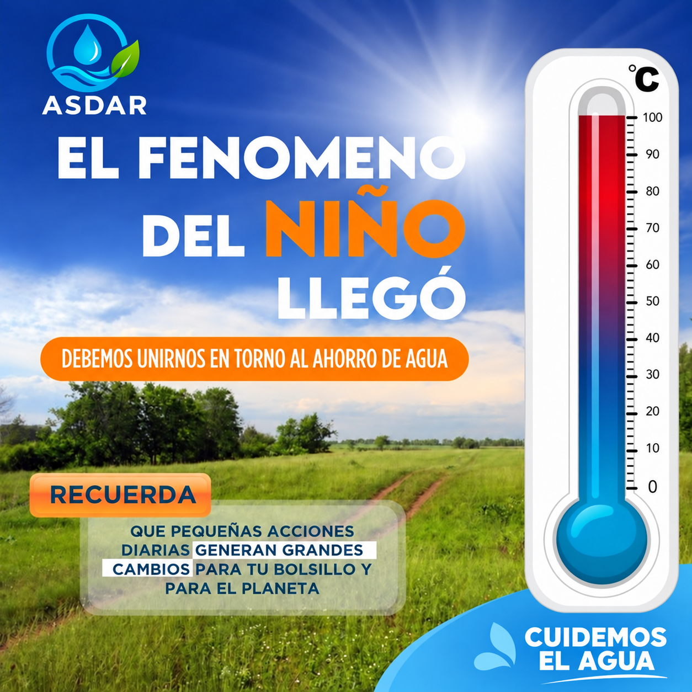

Información para nuestros suscriptores
Cuidemos juntos el agua
El agua es un recurso vital para nuestra comunidad, por eso desde ASDAR invitamos a todos los suscriptores a hacer un uso responsable y consciente del servicio. Pequeñas acciones como cerrar bien las llaves, reparar fugas y evitar el desperdicio ayudan a proteger este recurso para todos.
También les recordamos que el pago del servicio de agua se realiza todos los fines de semana. Estar al día nos permite seguir trabajando en el mantenimiento, operación y mejoramiento del acueducto.
ASDAR — Cuidamos el agua, cuidamos nuestra comunidad.